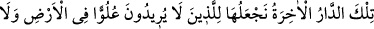
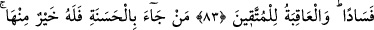
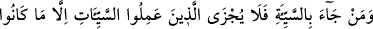
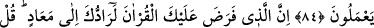
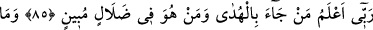
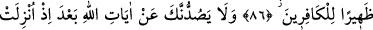
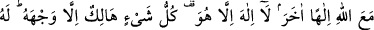
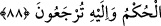

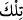
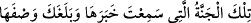
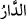
İŞTE AHİRET YURDU!
83. İşte ahiret yurdu! Biz onu yeryüzünde böbürlenmeyi ve bozgunculuğu
arzulamayan kimselere veririz. (En güzel) âkıbet, takvâ sâhiplerinindir.
84. Kim bir iyilik getirirse ona bundan daha hayırlı karşılık vardır. Kim bir
kötülük getirirse, o kötülükleri işleyenler, ancak yaptıkları kadar cezâ görürler.
85. (Rasûlüm!) Kur’an’ı (okumayı, tebliğ etmeyi ve ona uymayı) sana farz kılan
Allah, elbette seni (yine) dönülecek yere döndürecektir. De ki: Rabbim, kimin
hidâyeti getirdiğini ve kimin apaçık bir sapıklık içinde olduğunu en iyi bilendir.
86. Sen, bu Kitab’ın sana vahyolunacağını ummuyordun. (Bu) ancak Rabbinden
bir rahmet (olarak gelmiş) tir. O halde sakın kâfirlere arka çıkma!
87. Allâh’ın âyetleri sana indirildikten sonra, artık sakın onlar seni bu âyetlerden
alıkoymasınlar. Rabbine dâvet et. Asla müşriklerden olma!
88. Allah ile birlikte başka bir tanrıya tapıp yalvarma! O’ndan başka tanrı yoktur.
O’nun zâtından başka her şey yok olacaktır. Hüküm O’nundur ve siz ancak O’na
döndürüleceksiniz.
“İşte ahiret yurdu!”
“__WORD__ (İşte)” ifâdesi, âhiret yurdunun büyüklüğüne işâret eder. Sanki: “__WORD__ (Haberini işittiğin ve vasfı sana ulaşan işte bu
cennet...)” denilmiştir. “__WORD__ (yurt)” kelimesi, [mübteda konumundaki “__WORD__ (işte)”